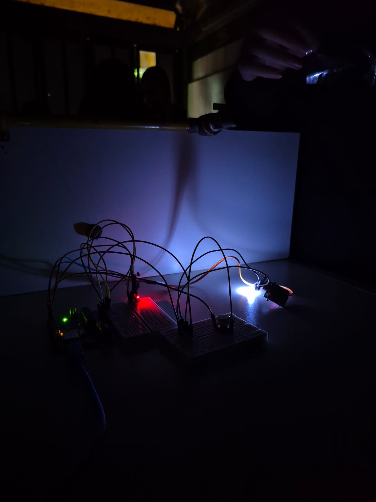
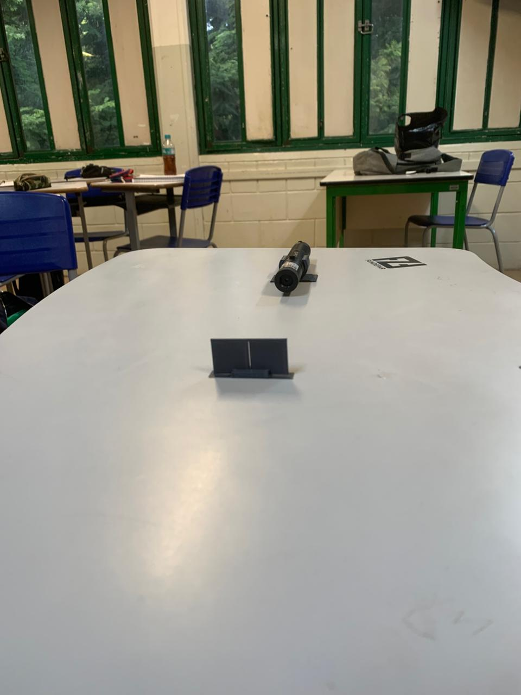
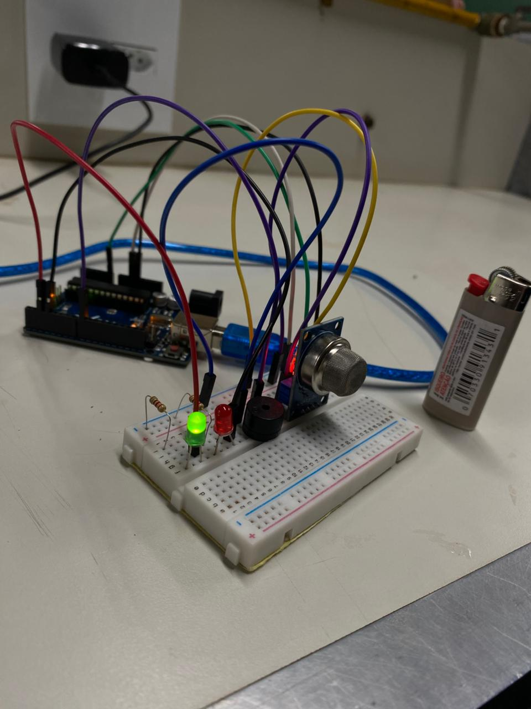

01
O que acontece com a imagem em um espelho plano?
Passe o mouse para ver a resposta.
Resposta
A imagem é virtual, direita e possui o mesmo tamanho do objeto.
Passe o mouse nos cards para ver as respostas.
Passe o mouse para ver a resposta.
A imagem é virtual, direita e possui o mesmo tamanho do objeto.
Passe o mouse para ver a resposta.
É um espelho cuja superfície refletora é voltada para dentro.
Passe o mouse para ver a resposta.
O côncavo é voltado para dentro e o convexo para fora.
Passe o mouse para ver a resposta.
É uma lente que aproxima os raios de luz, fazendo-os convergir.
Passe o mouse para ver a resposta.
Ela faz os raios de luz se afastarem.
Passe o mouse para ver a resposta.
É a distância entre o centro óptico e o foco de uma lente.

Passe o mouse para ver a resposta.
O LDR muda sua resistência de acordo com a quantidade de luz que recebe.

Passe o mouse para ver a resposta.
A luz sofre difração ao passar por uma abertura pequena, formando regiões claras e escuras.
Passe o mouse para ver a resposta.
A luz passa por duas fendas e produz interferência, formando faixas claras e escuras.

Passe o mouse para ver a resposta.
O MQ-2 é um sensor que pode detectar fumaça e determinados gases.
Passe o mouse para assistir.
Passe o mouse para assistir.
Passe o mouse para assistir.